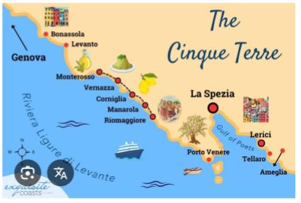
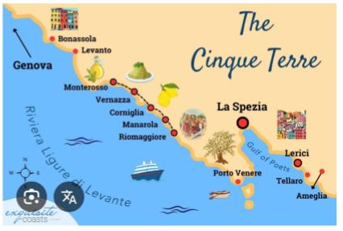

Desde Portofino ir a la estación de tren de La Spezia y desde allí tomar tren para recorrer los cinco pueblos de Cinque Terre: Riomaggiore, Manarola, Corniglia, Vernazza y Monterosso.
 

Riomaggiore
- Caminar por sus calles coloridas es el mejor plan. El pueblo está dividido por las vías del tren y en el centro se encuentra la Piazza Vignaioli.
- En la parte baja, recorrer la Via San Giacomo hasta el puerto y continuar hasta la Playa del Paese.
- En la parte alta, por Via Colombo, se llega a las iglesias y al castillo. Todo es en pendiente: ir sin prisa.
- El puerto es el mejor lugar para las fotos.
- Iglesia de San Giovanni Battista: iglesia neogótica construida en 1340.
- Castillo de Riomaggiore: del año 1260, con vistas espectaculares.
- Via dell’Amore: camino hacia Manarola, con reapertura prevista para 2024.
Manarola
- Via Renato Birolli: calle principal con restaurantes, bares, gelaterías y tiendas.
- Zona del puerto: sin playa, pero ideal para bañarse desde las rocas en verano.
- Via Belvedere: mirador más famoso del pueblo. Ideal al atardecer.
Corniglia
- Recorrer el centro histórico por Via Fieschi, la calle principal.
- Iglesia de San Pedro: construida en 1334, con frescos y pila bautismal del año 1100.
- Terrazas y balcones con vistas al mar y a Manarola.
- Largo Taragio: plaza principal con la Terraza de Santa Maria.
Vernazza
- Iglesia de Santa Margherita d’Antiochia: junto al mar, construida en 1318.
- Caminar por Via Visconti hasta el puerto y la pequeña playa.
- Castillo de Doria: símbolo histórico del pueblo. Torre visitable por 3 euros.
- Antiguo convento de los frailes, hoy sede del ayuntamiento.
- Santuario de Nuestra Señora de Reggio: acceso por sendero con vistas panorámicas.
Monterosso
- Único pueblo con playa de arena, paseo marítimo y servicios.
- Dividido en dos zonas: Fegina (estación) y centro histórico.
- Callejones típicos de Liguria llenos de restaurantes, cafés y tiendas.
- Desde Monterosso, regreso en tren a Santa Margherita de Liguria.